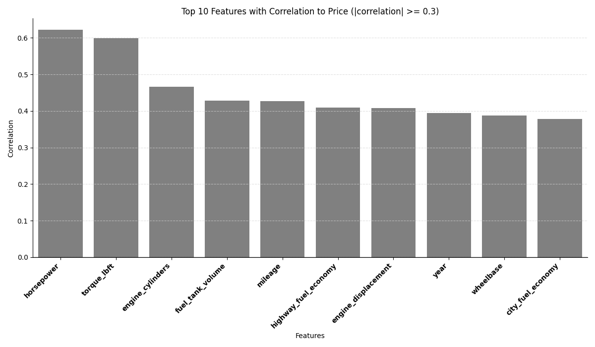
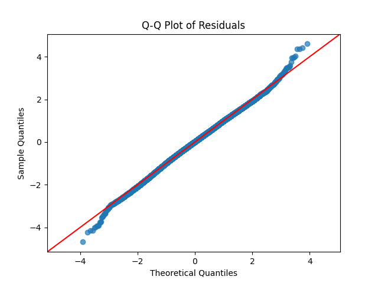
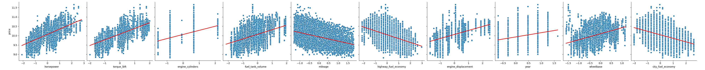
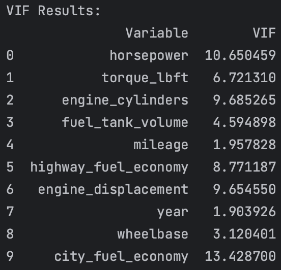
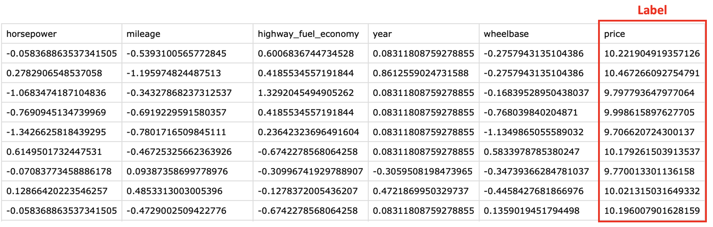

Randomly sampling 30,000 data points from the original dataset, correlation analysis was conducted to understand the relationship between independent variables and the dependent variable, 'price.' Selecting the top 10 independent variables with the highest correlation with 'price,' the correlation values were visualized using a bar chart.
To enhance the effectiveness of linear regression analysis, the independent variables were normalized, and a logarithmic transformation was performed on the dependent variable. This transformation aims to approximate the distribution of the dependent variable to a normal distribution, meeting the assumptions of a linear regression model. With the preprocessed data, a Q-Q plot was created to confirm that the residuals follow a normal distribution. The Q-Q plot exhibits a relatively close alignment along the 45-degree line, indicating that the model is well-fitted to the data, and the residuals show normality.
The scatter plot below illustrates the distribution of data points between each independent variable and the dependent variable. While the data points exhibit a linear pattern along the line, there might be some deviations. The points are reasonably clustered around the line, suggesting that the model is adequately capturing the data.
Finally, the table below shows that all Variance Inflation Factor (VIF) values are below 10. This indicates a relatively low degree of multicollinearity, as higher VIF values suggest stronger correlations among independent variables. A low VIF implies that the regression model has appropriate diversity among the independent variables, indicating model stability.
As a result of the above procedure, the following data was generated.
The dataset was cleaned to include only representative features, as there were overlapping features related to vehicle features.
########################################################################################## # ml_svm_data.py ########################################################################################## import pandas as pd import numpy as np import seaborn as sns import matplotlib.pyplot as plt from matplotlib.font_manager import FontProperties from sklearn.preprocessing import StandardScaler # Load CSV df = pd.read_csv("used_cars_data_cleaned_final_ver.csv") # Display structure of the dataframe print(df.info()) # Set seed for reproducibility np.random.seed(2010) # Number of rows to sample num_rows_to_sample = 1000#100000 # Randomly sample 100 rows from the dataframe df_sampled = df.sample(n=num_rows_to_sample, replace=False) # Select only numeric columns numeric_columns = df_sampled.select_dtypes(include=np.number).columns # Calculate correlations correlations = df_sampled[numeric_columns].corr()['price'].sort_values(ascending=False) # Plot bar chart with seaborn plt.figure(figsize=(12, 7)) selected_features = correlations palette = ['darkred' if abs(val) >= 0.3 else 'grey' for val in selected_features] barplot = sns.barplot(x=selected_features.index, y=selected_features.values, palette=palette) plt.title('Features with Correlation to Price (|correlation| >= 0.3)') plt.xlabel('Features') plt.ylabel('Correlation') # Adjust x-axis label rotation and alignment plt.xticks(rotation=45, ha='right') # Remove spines (borders) on the right and top sns.despine() # Add light grey horizontal grid lines plt.grid(axis='y', linestyle='--', alpha=0.7, color='lightgrey') # Add a black dashed line at y=0 plt.axhline(y=0, color='black', linestyle='-', linewidth=1) # Make x-axis labels with correlation >= 0.4 bold fontprops = FontProperties() for label in barplot.get_xticklabels(): if abs(selected_features[label.get_text()]) >= 0.3: label.set_fontweight('bold') plt.tight_layout() # Adjust layout to prevent cropping plt.show() # Extract the desired columns df_extracted = df_sampled[['horsepower', 'torque_lbft', 'width', 'year', 'mileage', 'fuel_tank_volume', 'highway_fuel_economy', 'price']] # Create bins and labels for the 'year' column bins = [float('-inf'), 2015, 2018, float('inf')] labels = ['1984-2015', '2016-2018', '2019-2021'] # Apply the cut function to create a new 'year_category' column df_extracted.loc[:, 'year_category'] = pd.cut(df_extracted['year'], bins=bins, labels=labels, right=False) # Perform one-hot encoding for 'year' with 0 and 1 df_extracted = pd.concat([df_extracted, pd.get_dummies(df_extracted['year_category'], prefix='year')], axis=1) # Convert 'True' to 1 and 'False' to 0 in the 'year_category' column df_extracted['year_1984-2015'] = df_extracted['year_1984-2015'].astype(int) df_extracted['year_2016-2018'] = df_extracted['year_2016-2018'].astype(int) df_extracted['year_2019-2021'] = df_extracted['year_2019-2021'].astype(int) # Drop the original 'year_category' column if needed df_extracted.drop('year', axis=1, inplace=True) df_extracted.drop('year_category', axis=1, inplace=True) # Rename the 'price' column to 'label' df_extracted.rename(columns={'price': 'label'}, inplace=True) # Discretize the 'label' column bins = [0, 13000, 30000, 10000000] # labels = ["Low", "Moderate", "High"] labels = [0, 1, 2] df_extracted['label'] = pd.cut(df_extracted['label'], bins=bins, labels=labels, right=False) df_extracted['label'] = df_extracted['label'].astype('category') # Save the standardized dataframe to a CSV file df_extracted.to_csv("used_cars_data_cleaned_final_ver_svm_sampled_preprocessed.csv", index=False) | cs |